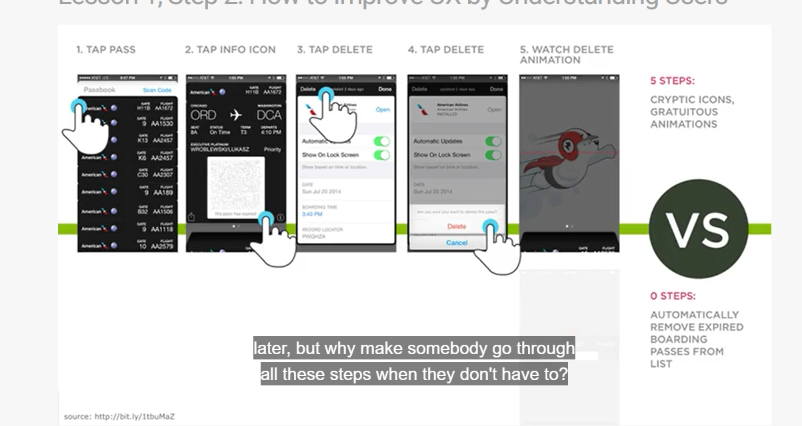

Week 01 Notes
- Design for your smallest least capable device and you'll focus on the content. Reverse it, and you'll be cramming a marshmallow into a piggy bank.
- We have a huge range of devices to deal with, and things need to work across all of them.
- Mobile devices are replaced more often, 2-3 devices per person now, households have a lot of devices for browsing the web.
- "Whatever you are doing, do mobile first" Eric Schmidt
- Responsive != mobile first
- Touch interaction issues are different than desktop
-
Things to remember
- Desktop computer sales have been declining since 2011
- You don't see people with heads in laptops
- Start small, and scale up (growing works, shrinking doesn't)
- Mobile is not a fad
- It's really hard to design products from focus groups, people don't know what they want Steve Jobs
- Be There, Be Useful, Be Quick
- 
- Reachability matters - how they handle their device 49% use one handed grip
- 1/2 second delay, 20% drop in traffic (Google)
- Speed matters
- "Software sucks"
-
Primary controls
- Move primary controls to the bottom, they won't have to reach, improved engagement
- Hamburger menu - many users don't know what this button is, Menu with a border increased engagement
-
Mobile inputs - forms
- Forms often have too much information
- Look cramped
- Remove labels and use placeholders
- Use float labels to make sure they still know what the fields are
- Ask for how they want to be contacted, and only ask for those details
- Do anything you can to reduce how much they have to fill out
- Use pagination (with progress indicator) if you absolutely must
- Enable auto complete
- Maybe show passwords by default on mobile, and allow them to hide rather than the opposite
- Make sure you do what's necessary to bring up the right keyboard for the input
- Turn phone numbers into links
-
Designing a better mobile advertising user experience
- Don't use pop ups or "in betweener" ads
- Don't put too many ads before the content
- Make ads small and simple
- Content first